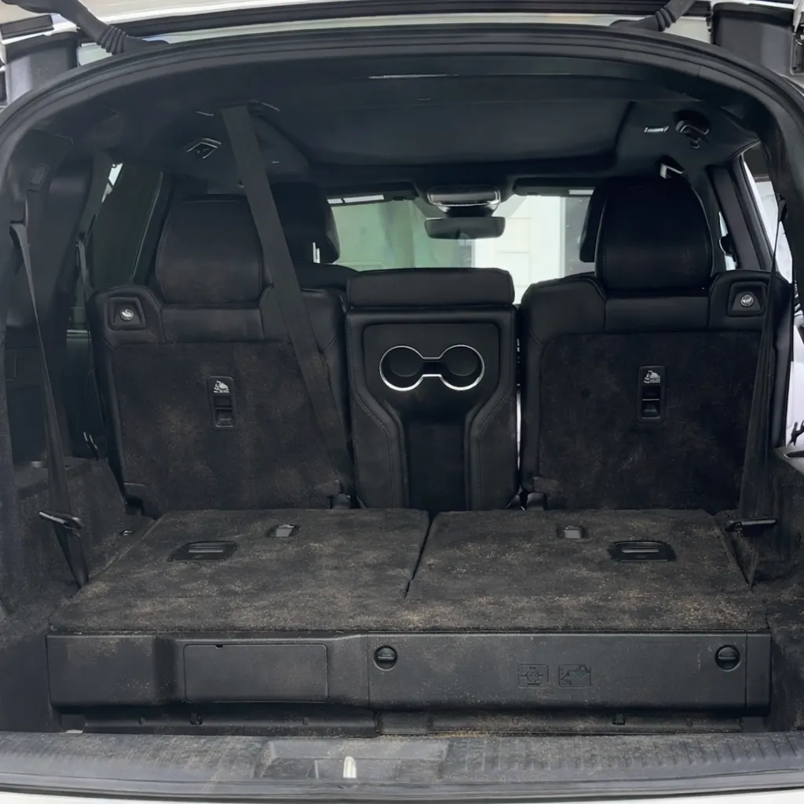
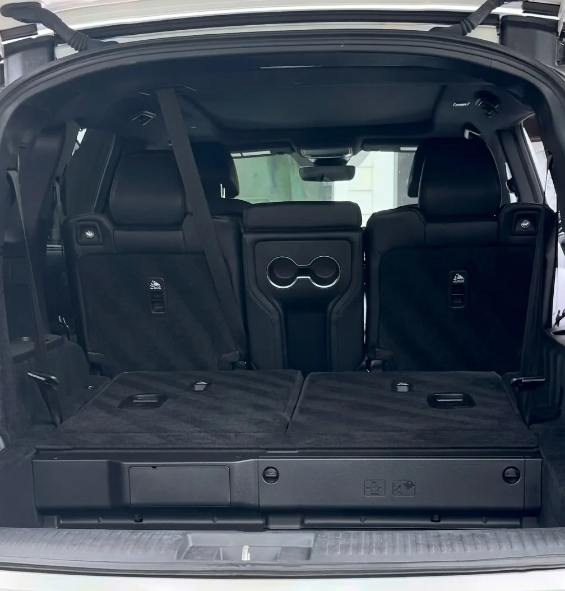

Plastic Mat Restoration
$25+Bring weather mats back from sun-faded gray to a deep, clean black finish.
Professional mobile detailing in Newton, MA for people who refuse to drive a dirty car. We come to you, showroom finish whenever and wherever.
Not a car wash. Not a detail shop. Something better. We show up with professional-grade equipment, learn exactly what you want, and treat every car like it's our own. Your preferences become ours. No shortcuts, no ticket numbers — just people who give a damn about the result and the customer.
Google Reviews
"Eric and team did a fantastic job on my car. It truly never looked so good. Every detail, inside and out, shines to perfection. They were a pleasure to work with. Highly recommend!"
See Reviews

Tap a service to see basic and professional tiers along with our most popular maintenance options.
Pair any of these with your appointment. Mention them in the booking notes or when you reach out.
Bring weather mats back from sun-faded gray to a deep, clean black finish.
Careful cleaning and dressing for a sharper presentation — sensitive areas always protected.
Deep extraction on cloth seats to lift trapped dirt, spills, and built-up grime.
Focused removal of embedded pet hair from seats, carpets, and tight interior areas.
Mobile convenience, real attention to the work, and a process that feels easy from the first message to the finished result.
Driveway, office lot, apartment garage — wherever your car is, that is where we work. No waiting rooms, no drop-offs, no day off needed. All we ask for is a spot and ideally access to water. We handle the rest.
Every detail and client is handled with the same care, the same products, and the same eye for the small things that separate a wash from a real detail. When you book with Euro Detailing, you work directly with Eric — not a franchise or a rotating crew.
Clear packages, transparent pricing, and direct booking links. You know what you're getting and what it costs before we show up. No surprise charges after the fact, no upselling on the day — what you book is what you pay for.
Hey, I'm Eric -- owner of Eurodetailing.
I started this because I genuinely love cars and I love the moment someone sees their car clean for the first time in months or even years. That reaction never gets old. Detailing gave me a way to do work I care about, build real connections with clients, and treat every car like it's my own -- because when it's in my hands, it is.
Originally from Spain and currently a junior in high school, I run this whole thing myself and look forward to treating every client like family, making sure your car always leaves better than it arrived.
Eric Salas, Owner
We are based around Newton and regularly serve surrounding areas. If you are slightly outside the list below, reach out and we can confirm availability before you book.

These are the questions most drivers ask before booking a detail in Newton or a nearby area.
Just a spot for your vehicle and access to a water source and outdoor outlet if possible. If your location doesn't have either, let us know in advance; we can usually work around it. We carry supplemental supplies for most situations — a water source helps for exterior work, but it is rarely a dealbreaker. Let us know your setup when you book and we will plan accordingly.
A basic interior or exterior usually takes 1–2 hours. Professional tiers run 3–4 hours, and a full professional bundle can take most of the day. Each service page lists a clear time estimate.
Pricing depends on the package and the size of your vehicle. As a quick reference, basic interior detailing starts at $90, basic exterior at $60, and the basic bundle at $135. Each service page has clear starting prices for both basic and professional tiers, plus add-ons if you need anything extra.
Not at all. As long as we have access to the vehicle and the keys, you're free to go about your day. We'll send updates and let you know once it's finished. Most clients are at work or running errands during their appointment — we treat the vehicle with the same care whether you are there or not.
Cash, Venmo, Zelle, Cash App and Checks. Payment is collected after the service so you can see the finished result first.
If your car is already maintained regularly, a Basic tier is plenty. If it's been a while or you feel your car is dirty, a Professional is recommended. Not sure? Send a quick message describing the vehicle's current condition and we can usually point you in the right direction before you commit to a booking.
Newton is the primary area, but we also serve nearby communities when the location and job are a good fit. Reach out if you are unsure whether you are inside the service range.
Maintenance is shown alongside professional service options. Select professional first or click the maintenance option inside the service card to view the matching price and booking link.
For booking questions, service-area checks, or help choosing a package, reach out directly. Eric responds quickly and can confirm availability, walk through the service options, or answer any questions about what to expect before you commit.